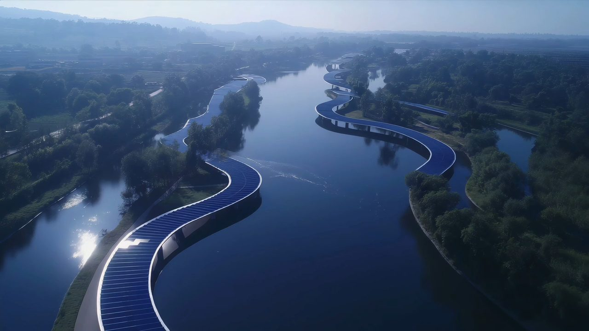
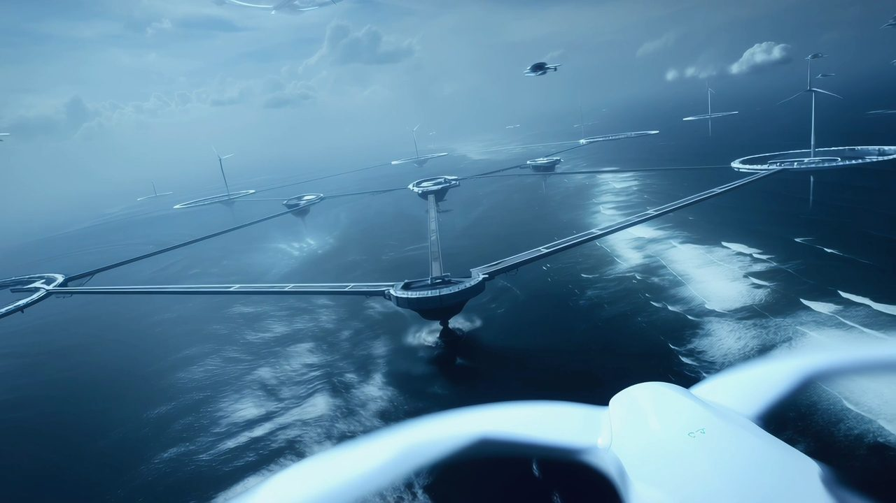
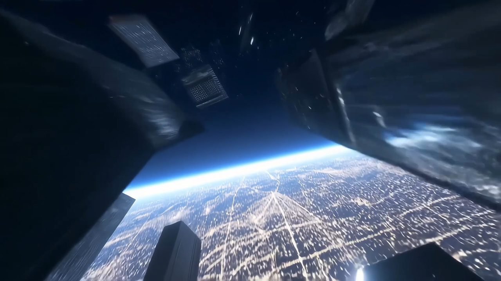
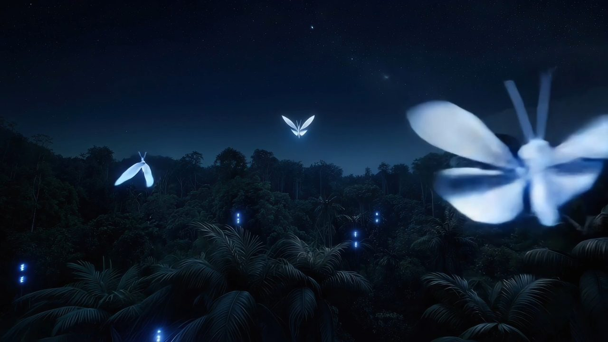

공모전 출품작(아이티센 과제) · 2025
아이티센
아이티센 홍보영상

내용
드넓은 우주에서 시작해, 붉은 사막을 걷는 사람, 바다 위 발전 구조물 곁에 나란히 앉은 두 사람, 평행한 트랙을 달리는 개썰매 팀, 도시 빌딩 숲을 가르는 드론, 물속에 깔린 태양광 패널, 밤 정글 위를 떠다니는 나비 드론으로 이어집니다. 마지막 컷에서 지구를 등지고 선 인물 뒤로 로고가 떠오릅니다.



과제가 요구한 메시지에 맞춘 연출
과제가 담으라고 한 것은 아이티센이 기술 스타트업에 투자하고, 넓은 투자 네트워크로 후속 투자까지 이어 주는 동반자라는 점이었습니다. 이 내용을 내레이션으로 설명하지 않고 은유로 표현했습니다. "먼 길엔, 함께 걷는 이가 필요하다", "누구와 나란히 설 것인가"처럼 파트너를 고르는 질문으로 시작해, 마지막 한 줄 "기술을 이해하는 투자자, 아이티센"에서만 회사를 직접 언급합니다. 돈만 대는 곳이 아니라 기술을 알고 같이 가는 투자자라는 점에 무게를 두었습니다.
그래서 사무실, 악수, 그래프 같은 비즈니스 장면은 사용하지 않았습니다. 스타트업이 넘어야 할 '먼 길'을 우주와 사막과 얼음길로 보여 주고, 장면마다 둘이 나란히 앉거나 여러 마리가 한 방향으로 달리게 해 '함께'를 표현했습니다. 위에서 본 얼음길의 썰매 자국은 회로도처럼, 꽃밭 아래 뿌리는 전선처럼 보이게 해 자연 이미지가 기술 이미지로 겹쳐 읽히게 했습니다.